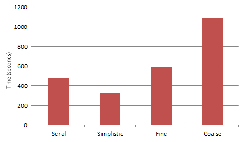

Similarity Score Generation over Heterogeneous Data
CS205 | Fall 2011
Kane Hsieh & Yonatan Kogan

An identified problem in primary and secondary education is that it is often necessary for teachers to spend an inordinate amount of time making lesson plans, rather than focusing on increasing individual student performance, even though the lesson plans have likely already been developed and refined by similar teachers. This is because there is no efficient or standardized way to share and peer review lesson plans.
BetterLesson is a Boston-based startup that seeks "to connect educators and help them create, organize, and share their curricula." They have collected a large database of teachers, lesson plans, and related metadata. In order to help teachers identify relevant lesson plans, BetterLesson hopes to direct teachers to other educators who share similar content areas and teaching styles.
This recommendation engine needs to be fast against a increasingly large dataset.
The focus of this project is minimizing the latency that a user of BetterLessons experiences when searching for similar teachers and lesson plans.
The data was provided to us by BetterLesson, an organization that seeks to aid teachres in collaborating and sharing the best course material. In their own words, "We are focused on aggregating and scaling the most innovative content and practices from high-performing teachers across the country."
We were provided with a 120 megabyte CSV in which each row represented an individual teacher. The columns provided were: UID, firstName, state, dateCreated, score (which is BetterData's own metadata 'ranking'), upload and download, (which refer to lesson plan contributions), schoolName, and courseNames, unitNames, and grades. The last three were lists of strings delimited by the '|' character. An example of a row of data is below:
13,Alex,MA,9/5/2008 15:58,7115874,456,3142,Roxbury Prep Middle School,Social Studies | English / Language Arts | Writing | Listening and Speaking,Roxbury Prep 6th Grade English | Brown Social Studies | Grammar and Mechanics,Intro to Nouns and Verbs | Formal Writing Assignments | World War II | Nouns and Verbs | Nouns and Adjectives | Adjectives and Adverbs | Advertising Project | Autobiography Writing Project | How to Write a Business Letter | Time For Kids | Commonly Misused Words | Creative Writing Assignments | Writing Rubrics | Paragraph Structure | Assorted Grammar | Sentence Types | Figurative Language,Sixth grade | Seventh grade | Eighth Grade
The goal was to use a mapper to generate a "similarity" score between every pair of rows in order to recommend the most similar teachers for collaborative purposes. To this end, we also generated two variations of the dataset. reshaped_coarsegrained_mapper_user_export.csv provides the same data, but each cell is a 5-tuple to reduce the frequency that data is transferred between the devices and mappers/reducers:
(13,14,15,16,17),(Alex,John,Steve,Kim,Kyle),(MA,MA,NY,MA,TX)... (Seventh grade | Eighth Grade, Fifth Grade | Eighth Grade, Sixth Grade, Fifth Grade | Sixth Grade, Eighth Grade)
The second variation of data we created was reshaped_finegrained_mapper_user_export.csv, in which each row as the format UID,[column name],[value]. This results in ten rows of data per teacher. The purpose of this dataset is so that each mapper has to do less work because it only computes the score based on one column; however, more mappers are needed to do the full computation. Thus, this dataset is advantageous only when mappers are cheap:
13,firstName,Alex
13,state,MA
13,school,Roxbury Prep Middle School
...
16,name,Kim
...
16,grades,Fifth Grade | Sixth Grade
...
Performance on Amazon EMR small instances are discussed in the Performance section.
blah
To run the project, use the following command line arguments:
python [LAUNCHER] [MAPPER] [DATASET]
For example:
python mr_launcher.py fine_grained_mr.py reshaped_coarsegrained_mapper_user_export.csv
By default, the script runs locally. With a properly configured .mrjob file, the flag -emr can be used to run the script on Amazon EMR. The result of a successful run is the creation of file scoreDict.txt and a line in the file perflog.csv. Lines in perflog.csv have the following format:
python mr_launcher.py fine_grained_mr.py reshaped_coarsegrained_mapper_user_export.csv
By default, the script runs locally. With a properly configured .mrjob file, the flag -emr can be used to run the script on Amazon EMR. The result of a successful run is the creation of file scoreDict.txt and a line in the file perflog.csv. The file perfLog.csv is a log generated by the launcher each time it runs the mapper, and each line has the following format:
[ROWS COMPUTED],[TOTAL RUNTIME],[AVG RUNTIME],[TIMESTAMP]
The other file, scoreDict.txt, is upper-right matrix of teacher-teacher similarity scores in a python dict format. Each entry in scoreDict.txt has the following format:
(UID1,UID2) : [SIMILARITY SCORE]
The key format is a tuple, (UID1,UID2), of any two teachers, and the value [SIMILARITY SCORE] is a score on the scale of 0-1 as generated by the functions in comparisons.py (see Design for more information). The dictionary allows for constant time lookup of the similarity of any two teachers, and an nlogn lookup of the top X similar teachers for any given teacher.
To benchmark our project, we used an artificially inflated dataset with something on the order of 6*1E6 teachers. This dataset was reshaped accordingly in order to benchmark with our coarse mapper and fine mapper, which had 1.2*1E6 and 6*1E7 rows, respectively (see Data for more information).
The following results were obtained using 16 small instances on Amazon EMR:
- The serial approach took 483 seconds.
- The simplistic approach, in which each mapper generates the teacher's score across every data column of another teacher and returns the top 10, took 327 seconds.
- The fine grained apprach, in which each mapper generates the teacher's score across one data column of another teacher, took 590 seconds.
- The coarse grained apprach, in which each mapper generates the teacher's score across every data column of 5 teachers at a time and returns the top 10, took 1087 seconds.

It is apparent here that our simplistic mapper approach took the least time to generate all the scores for one teacher row across the large dataset. The implication here is that it is more costly for a mapper to do a lot of work than it is to pass more data.
We also benchmarked all of our implementations against datasets of various sizes to see how performance varies across the size of the input data. The following results were obtained using 16 small instances on Amazon EMR:
As expected, the advantage of using map-reduce manifests as the dataset gets larger. This is apparent with our simple mapper, and the fine mapper performance is approaching that of the serial mapper for our full dataset. Inferring from the trend lines, we can expect that the fine mapper will outperform the serial implementation if we double the datasize again.
We were confused and concerned by the degenerating performance of the coarse grain mapper, whose run time increased exponentially every time we doubled the dataset size. This was worse than the serial implementation. We hypothesized that this was the result of caching and memory limitations on the anemic small EC2 instances that only affected our coarse mapper because of its much larger line size. To explore this hypothesize, we fixed the number of instances at 16 but launched our coarse mapper on a large EC2 instance.
We also tried a different approach, in which we use map-reduce to initially build the entire matrix of teacher-teacher similarity scores and save it as a dictionary with the entry format (id1,id2) : [SCORE]. The dictionary allows for constant time lookup of the similarity of any two teachers, and an nlogn lookup of the top X similar teachers for any given teacher. We tested our upper-triangle dictionary builder (see Design) on 20 rows, which built a 6 * 1E6 by 20 matrix. This ran in 18760 seconds, or an average of 938 seconds per row; however, this time was largely dominated by the time required to launch an EC2 instance for every row. The implication here is that a for loop to launch mappers for the rows is a nonideal design.
CONCLUSIONS - do not build entire dictionary at once initially (unless you have super fast computers). Rather, save each dictionary row on the intial check so future comparisons can be done in constant time.
The most significant thing we learned from this project is that the map-reduce framework is not very flexible. It does not lend itself well to running two-variable computations when both variables are indepedendent and unknown in advance. This made it very difficult to fill a matrix of similiarty scores without running mutliple map-reduce jobs.
One way to address this is to reshape the input data, but in our case this would have led to a quadratic increase in space usage to store the input data.
We tried having each mapper open its own version of the input data, but this was also very time and space costly, especially when we were waiting on Amazon EC2.
One extension is to refine the code that generates the upper triangular matrix of teacher-teacher scores such that every loop iteration that launches mappers reuses the same EC2 instances as the previous iteration rather than starting new ones, since waiting for instances to start was the majority of the total runtime for the code that built the dictionary
A better implementation would be to launch each row computation of the matrix in parallel, rather than waiting for the loop iterations. An even better implementation would be to load-balance row computations across jobs in parallel such as the following:
This would make our dictionary buildling time comparable to the simple mapping time (see Performance), assuming we could launch n/2 jobs, where n is the number of rows in the matrix. Otherwise, with t jobs, we can build the entire dictionary in the same time as the simple mapper times a factor of (n/2*t).
Another way to increase the performance of our project would be to find the bucket size for the coarse mapper to optimize the cost of computation versus the cost of passing data. Our project used a rows of 5-tuples in the coarse mapper, which did not give us performance better than the simple or fine mapper (see Performance). Without testing more we don't know if this optimum bucket lies between our fine and simple mapper, between our simpmle and coarse mapper, or even larger than our coarse mapper.
This was not within the scope of the project, but our score generator functions are very rudimentary. Ideally the comparison on rows such as subjects and courses would involve some sophisticated natural language processing which could run in parallel as well since there are no dependencies between elements in the matrix.
Mauris eleifend est et turpis. Duis id erat. Suspendisse potenti. Aliquam vulputate, pede vel vehicula accumsan, mi neque rutrum erat, eu congue orci lorem eget lorem. Vestibulum non ante. Class aptent taciti sociosqu ad litora torquent per conubia nostra, per inceptos himenaeos. Fusce sodales. Quisque eu urna vel enim commodo pellentesque. Praesent eu risus hendrerit ligula tempus pretium. Curabitur lorem enim, pretium nec, feugiat nec, luctus a, lacus.
Duis cursus. Maecenas ligula eros, blandit nec, pharetra at, semper at, magna. Nullam ac lacus. Nulla facilisi. Praesent viverra justo vitae neque. Praesent blandit adipiscing velit. Suspendisse potenti. Donec mattis, pede vel pharetra blandit, magna ligula faucibus eros, id euismod lacus dolor eget odio. Nam scelerisque. Donec non libero sed nulla mattis commodo. Ut sagittis. Donec nisi lectus, feugiat porttitor, tempor ac, tempor vitae, pede. Aenean vehicula velit eu tellus interdum rutrum. Maecenas commodo. Pellentesque nec elit. Fusce in lacus. Vivamus a libero vitae lectus hendrerit hendrerit.